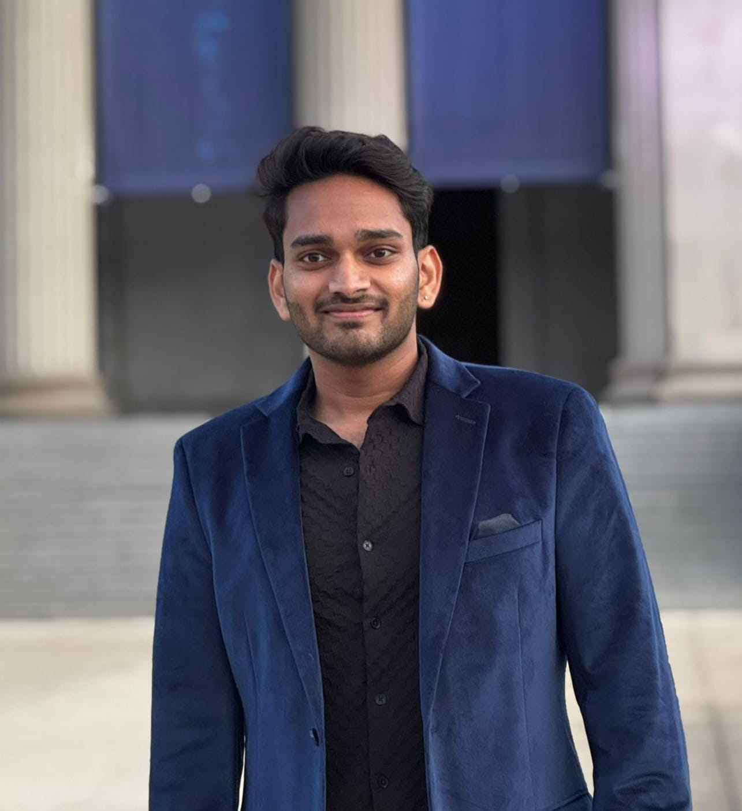
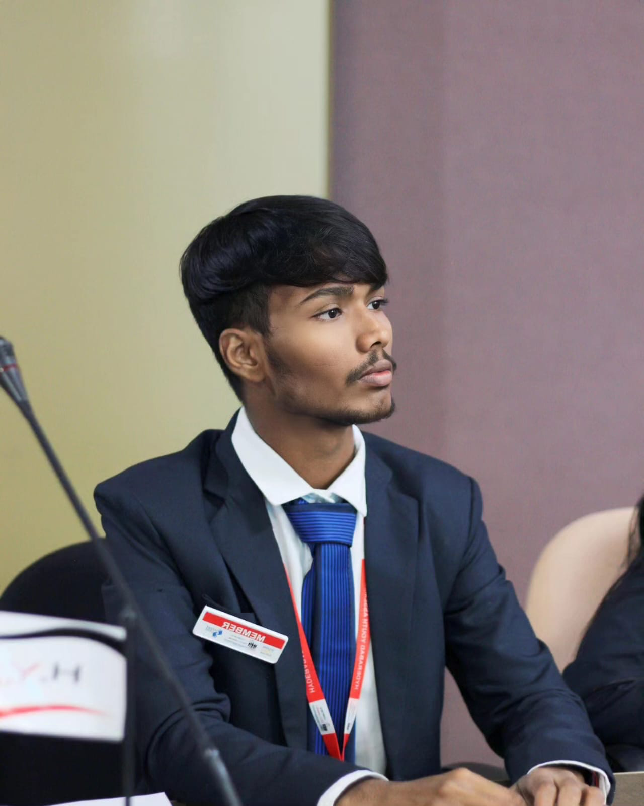
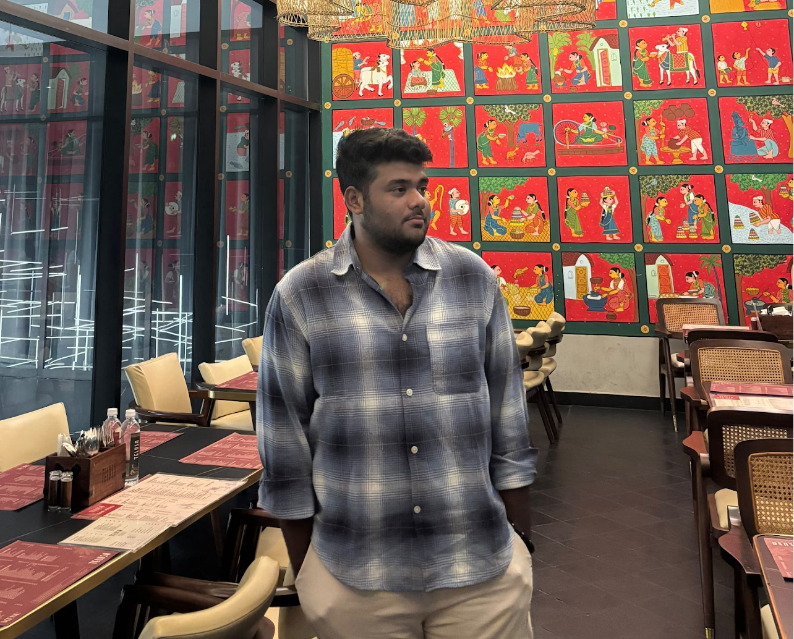

About the Committee
AIPPM is a forum where representatives of political parties from all over the country meet to discuss issues of national importance, public policy and governance. It provides a platform for discussion that aims to promote democratic values, informed decision making and collaborative approaches to addressing national challenges.
Agenda
Deliberation upon Delimitation in India with Special Emphasis on Population Representation, Federal Balance, and Democratic Equity.
Background Guide
Executive Board

Speaker: Nayan Chandra Veeranki
Nayan Chandra Veeranki is a Research and Policy Associate at J-PAL South Asia, working with the Governments of Telangana and Karnataka on evidence-based policy and agrifinance development programs. He holds a Master of Public Policy (MPP) from the University of Chicago. Beyond his professional work, he has participated in over 60 Model United Nations (MUN) conferences and is passionate about Indian politics and public policy.

Deputy Speaker: Pavan Rathod
From the tribal roots of Telangana to the global corridors of power, NENAVATH PAVAN RATHOD has become a name whispered in MUN circles and spoken with respect on international stages — a relentless negotiator and an aspiring Indian diplomat whose journey is nothing short of extraordinary. With over 30 Model United Nations under his belt — from the United Nations Security Council to AIPPM, from Lok Sabha to the UNHRC — he has not just debated policy, he has shaped it, earning Best Delegate, High Commendation, Honourable Mention, and more, while serving in every role imaginable: Delegate, Secretariat, OC, AUSG, Chargé D’Affaires, Vice Chairperson, Deputy Speaker, and Chairperson. His voice has carried far beyond committee walls — as Best Member of the Hyderabad Youth Assembly, he led youth-driven policy initiatives; as India’s delegate to the International Solar Alliance Festival, he stood among global leaders and the World Bank to chart a solar future; at the World Summit Awards Global Congress 2025, he joined 189+ delegates from 50+ nations to envision digital governance; and as a Carbon Markets Association of India contributor, he helped shape India’s climate finance framework and earned an invitation to COP29. But Pavan’s mission is bigger than titles — it’s a calling. He is driven by an unshakable purpose: Justice. Equality. Empowerment for young minds. From joining the Teach For India revolution to provide quality education, to preparing for the DefIndia Digital Literacy movement that will bring knowledge to rural India, to writing policy papers for Kautilya on Gender Inclusion and Inclusive Governance, his journey is not just about representing change — it’s about creating it. From grassroots assemblies to global summits, every title, every stage, every speech has led to one undeniable truth — when NENAVATH PAVAN RATHOD rises to speak, the room doesn’t just listen… the room changes.

Scribe: Shreenik Devisetty
Introducing Shreenik Devisetty, a second-year Electronics Engineering student at CBIT and an experienced member of the Hyderabad MUN circuit. Known for his approachable personality, composed demeanour, and ability to connect effortlessly with people, Shreenik brings a unique balance of professionalism, energy, and empathy to every committee he is a part of.With extensive experience across various MUN conferences and Secretariat roles, he has developed a strong understanding of committee dynamics, delegate engagement, and the intricacies of effective debate. As an upcoming Executive Board member, Shreenik aims to bring his experience, passion for diplomacy, and love for MUNs into the committee room.